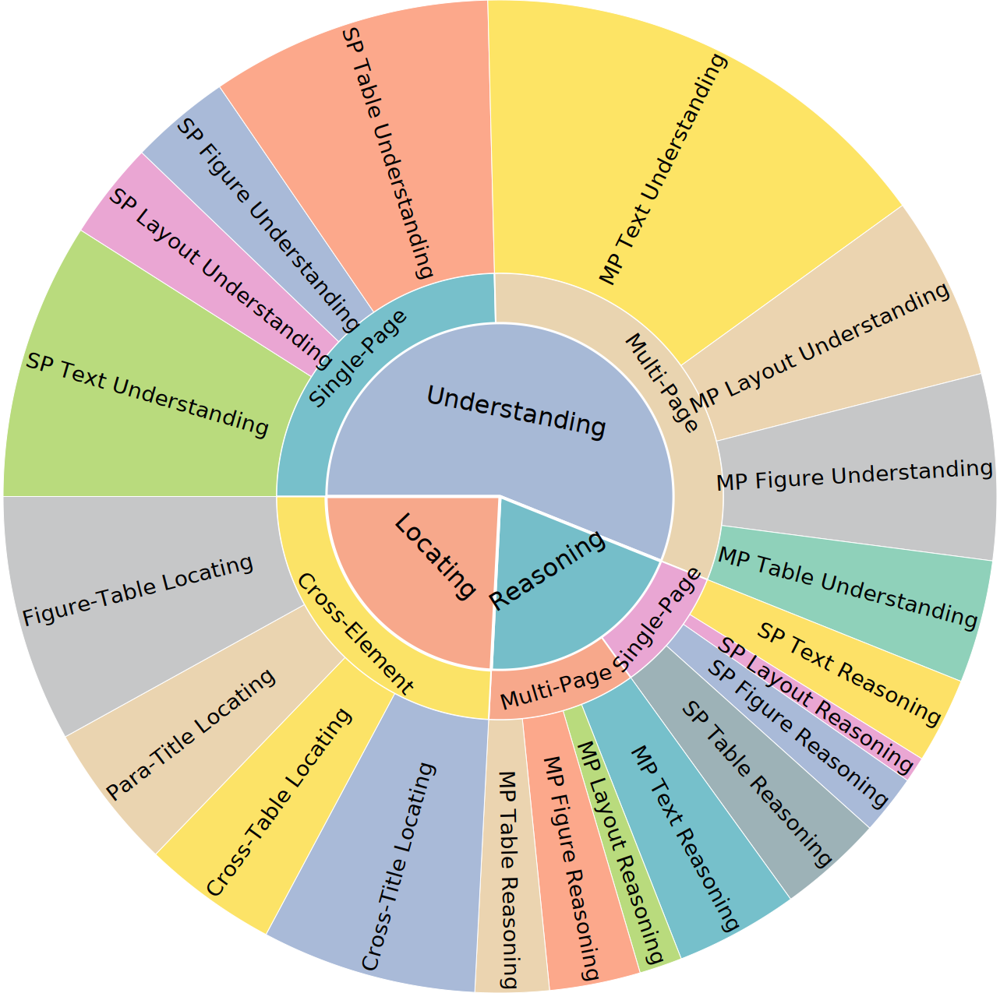
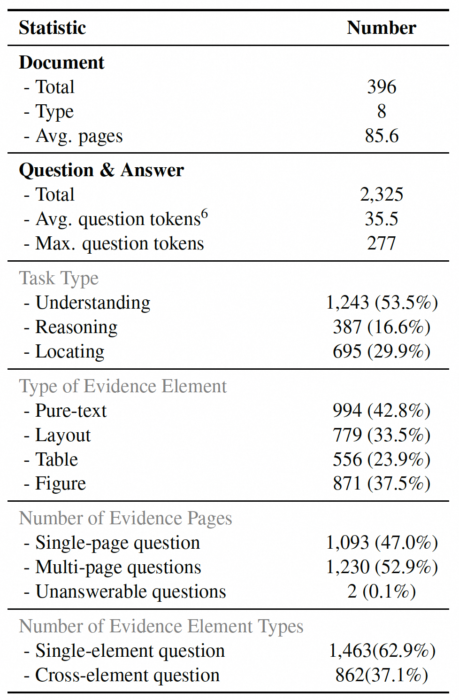
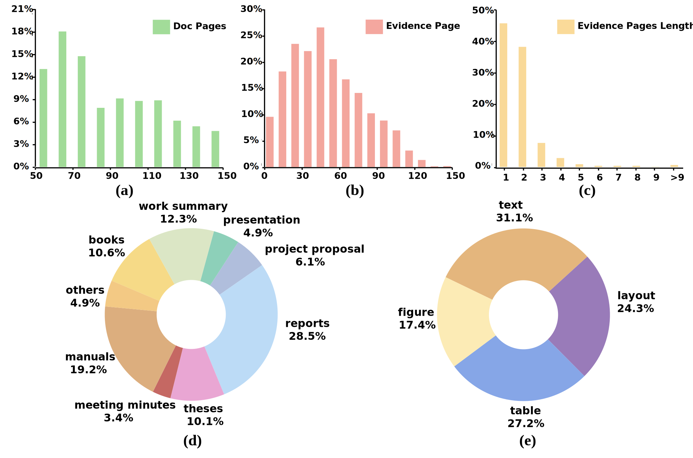
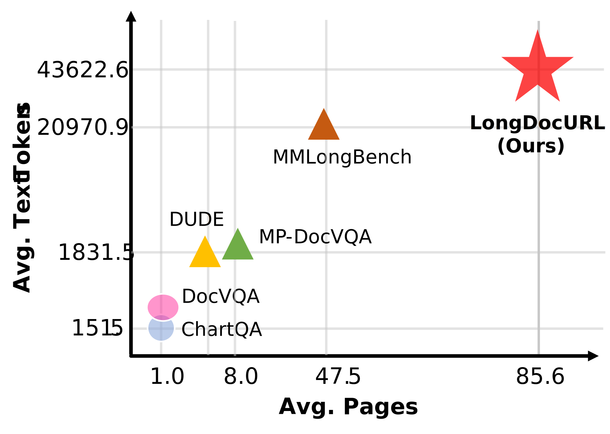
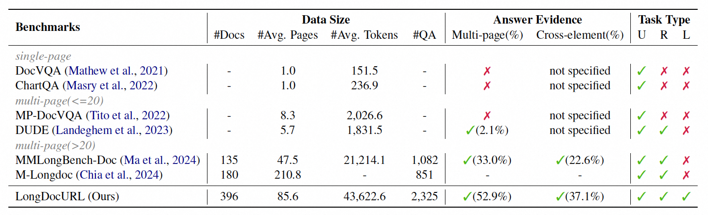
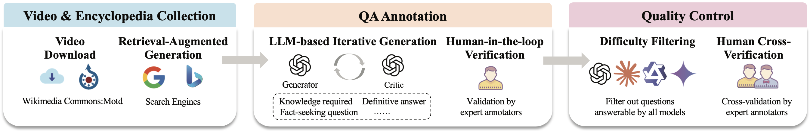

| # | Model | Size | Task Type | Evidence Element | Page/Element | Total | |||||||
|---|---|---|---|---|---|---|---|---|---|---|---|---|---|
| U | R | L | TXT | LAY | FIG | TAB | SP | MP | CE | ||||
|
GPT-4o-24-05-13 🥇
OpenAI |
- | 68.6 | 59.9 | 59.6 | 70.7 | 60.0 | 67.4 | 60.3 | 65.8 | 63.2 | 65.4 | 64.5 | |
|
Gemini-1.5-Pro 🥈
|
- | 55.7 | 43.4 | 46.4 | 58.7 | 50.4 | 50.0 | 41.8 | 48.7 | 52.8 | 49.9 | 50.9 | |
|
Qwen-VL-Max 🥉
Alibaba |
- | 58.8 | 43.9 | 36.0 | 58.0 | 40.2 | 52.3 | 44.6 | 51.6 | 47.6 | 48.0 | 49.5 | |
|
Qwen2-VL
Alibaba |
7B | 36.9 | 24.8 | 22.6 | 37.7 | 29.7 | 28.6 | 23.7 | 27.2 | 33.6 | 29.9 | 30.6 | |
|
LLaVA-OneVision-Chat
Bytedance & NTU S-Lab |
7B | 30.5 | 19.0 | 18.7 | 32.2 | 26.5 | 24.4 | 15.4 | 19.8 | 29.7 | 24.2 | 25.0 | |
|
LLaVA-Next-Interleave-DPO
Bytedance & HKUST |
7B | 21.6 | 13.9 | 7.6 | 22.5 | 13.9 | 15.4 | 8.7 | 12.1 | 19.8 | 13.5 | 16.2 | |
|
Llama-3.2
Meta |
11B | 12.9 | 9.4 | 2.7 | 11.8 | 6.9 | 8.7 | 6.3 | 7.9 | 10.3 | 6.8 | 9.2 | |
Statistics

Inner: divided by the primary task categories (Understanding, Reasoning, and Locating).
Middle: divided by the number of answer evidence pages (Single-Page, Multi-Page),
and the number of types of evidence elements (Cross-Element).
Outer: divided by the types of evidence elements (Text, Table, Figure, Layout).


The statistical analysis of our dataset about the distribution characteristics across
(a) document pages, (b) answer evidence page, (c) evidence pages length, (d) document sources, and (e) evidence element types.
Benchmark Comparison

Comparison with other datasets in average pages and text tokens per document.

The dataset attributes comparison between our LongDocURL and MMLongBench-Doc.

Comparison between LongDocURL and previous document understanding datasets.
Task types: (U)nderstanding, (R)easoning, and (L)ocating.
Construction Pipeline

Overview of our semi-automated construction pipeline.
The pipeline comprises four modules:
(a) Extract & Filter;
(b) QA Generation;
(c) Automated Verification;
(d) Human Verification.